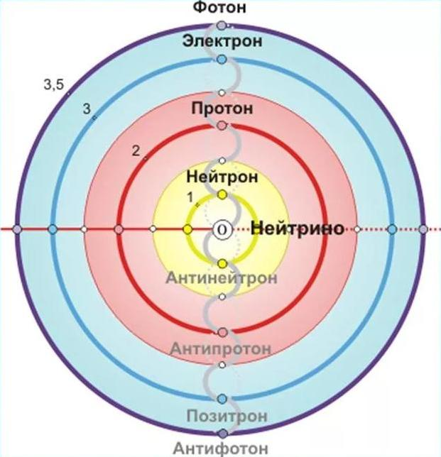
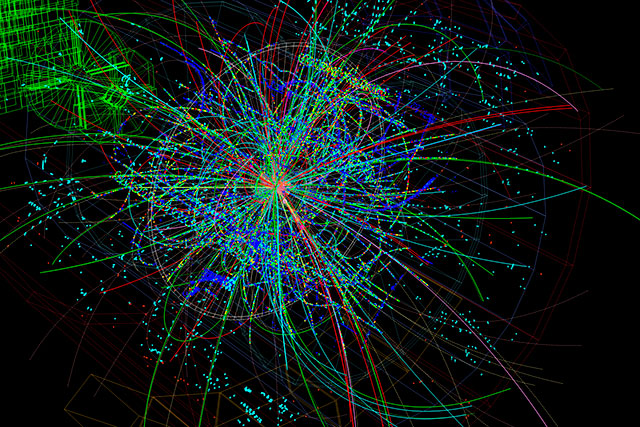
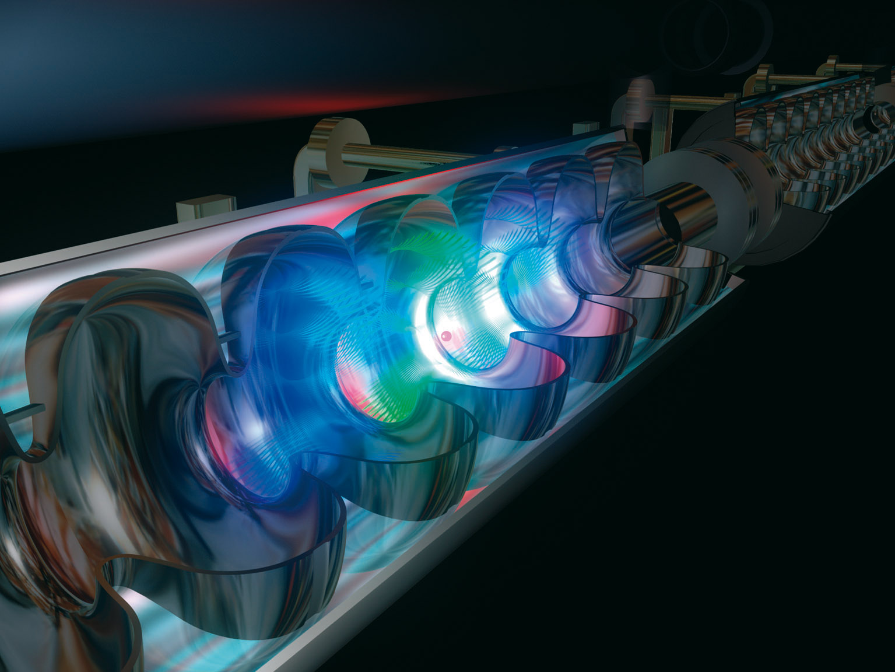
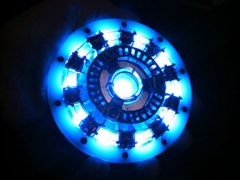

Физика элементарных частиц
Физика элементарных частиц

Фи́зика элемента́рных части́ц (ФЭЧ), часто называемая также фи́зикой высо́ких эне́ргий или субъядерной физикой — раздел физики, изучающий структуру и свойства элементарных частиц и их взаимодействия.
На сегодняшний день основным орудием в теоретической физике элементарных частиц является квантовая теория поля. В рамках этой теоретической схемы любая элементарная частица рассматривается как квант возбуждения определённого квантового поля. Для каждого типа частиц вводится собственное поле. Квантовые поля взаимодействуют, в этом случае их кванты могут превращаться друг в друга.

Главным результатом современной теоретической ФЭЧ является построение Стандартной модели физики элементарных частиц. Данная модель базируется на идее калибровочных взаимодействий полей и механизме спонтанного нарушения калибровочной симметрии (механизм Хиггса). За последние пару десятков лет её предсказания были многократно перепроверены в экспериментах, и в настоящее время она — единственная физическая теория, адекватно описывающая устройство нашего мира вплоть до расстояний порядка 10−18 м. Всего модель описывает 61 частицу

Чтобы упростить себе жизнь, физики сгруппировали все частицы в зависимости от особенностей их строения и прочих характеристик. Классификация :
Время жизни:
Стабильные. В их числе протон и антипротон, электрон и позитрон, фотон, а также гравитон.
Нестабильные. Все остальные частицы спустя некоторое время распадаются на свои составные части, потому называются нестабильными.

Главным результатом современной теоретической ФЭЧ является построение Стандартной модели физики элементарных частиц. Данная модель базируется на идее калибровочных взаимодействий полей и механизме спонтанного нарушения калибровочной симметрии (механизм Хиггса). За последние пару десятков лет её предсказания были многократно перепроверены в экспериментах, и в настоящее время она — единственная физическая теория, адекватно описывающая устройство нашего мира вплоть до расстояний порядка 10−18 м. Всего модель описывает 61 частицу.
Однако, еще до открытия бозона Хиггса – последней частицы, предсказываемой Стандартной моделью, ученые вышли за ее пределы. Ярким примером тому есть т.н. «гравитационное взаимодействие», которое сегодня находится наравне с другими. Предположительно, переносчиком его есть частица со спином 2, которая не имеет массы, и которую физикам еще не удалось обнаружить — «гравитон».
Мало того, Стандартная модель описывает 61 частицу, а на сегодняшний день человечеству известно уже более 350 частиц. Это означает, что на достигнутом работа физиков-теоретиков не окончена.